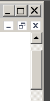

В KDE4 есть два понятия, которые отвечают за внешний вид рабочего стола
- Тема
- Оформление окон
Тема - это все элементы оформления интерфейса, за исключением элементов оформления окна.
Оформление окон - это небольшой набор элементов, используемых для оформления окна. Обычно включают в себя кнопки закрытия, сворачивания и разворачивания окон, обормление заголовка окна и рамки вокруг окна.
Здесь рассказывается о том, как поменять оформление окон.
Оформление окон я нашел в каталоге
~/.kde/share/apps/aurorae/themes
Уж не знаю как оформление связано именно с темой Aurorae, но именно сдесь лежат файлы оформления окон.
Сообщу на всякий случай, где лежат темы, может кому пригодится:
~/.kde/share/apps/desktoptheme
Файлы close.svg, maximize.svg, restore.svg
Идентификаторы объектов:
Активное окно
deactivated-center - непонятно
active-center - когда курсор не наведен на кнопку
hover-center - когда курсор находится над кнопкой
pressed-center - когда кнопка нажата
Неактивное окно
deactivated-inactive-center
inactive-center
hover-inactive-center

Файл decoration.svg
Идентификаторы объектов:
overlay - прямоугольник с градиентом?
decoration-topleft - левый верхний угол
overlay->south-center